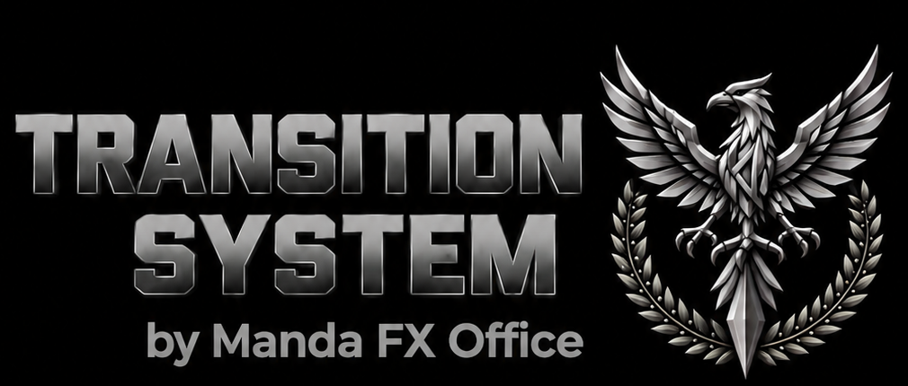

FXの入口
FXをこれから始める方へ。まず「仕組み・チャート・資金・心」を知るところから。
相場を知り、自分のルールを作り、資金を守りながら判断していくものです。
このページでは、初心者が最初に知っておきたい基本を順番に整理します。
01｜FXの基本を知る
最初は「何を売買しているのか」「なぜ価格が動くのか」を理解するところから。
FXとは？
FXは、異なる通貨の交換レートの変化を利用して取引する金融商品です。買いから入る場合だけでなく、売りから入る取引もあります。
通貨ペアとは？
USD/JPYのように2つの通貨を組み合わせて表示します。左側の通貨と右側の通貨の関係として価格を読みます。
レートはなぜ動く？
金利、経済指標、景気、金融政策、政治情勢、要人発言など、さまざまな要因で為替相場は変動します。
レバレッジと証拠金
少ない証拠金で大きな取引額を扱える仕組みですが、その分、損益の変化も大きくなります。仕組みを理解してから利用することが重要です。
公的なリスク情報：金融庁「外国為替証拠金取引について」
02｜テクニカルトレード
チャートから「流れ・方向・転換」を整理し、自分なりの判断ルールを作っていきます。
ローソク足を見る
始値・高値・安値・終値から、その時間帯にどのような値動きがあったのかを確認します。
トレンドを見る
高値・安値の動きや移動平均線などを使い、上昇・下降・持ち合いの状態を整理します。
サポート・レジスタンス
過去に反応した価格帯を確認し、現在価格がどの位置にあるのかを考えます。
インジケーターを使う
BB、MA、MACDなどは判断を整理するための補助道具です。インジケーター単独で将来の値動きが決まるものではありません。
03｜資金管理
FXでは「いくら儲けるか」だけでなく、「いくらまでなら失っても取引を続けられるか」を考えることが重要です。
ロスカットがあるから安全、ではありません
ロスカットは損失の拡大を抑えるための仕組みですが、相場急変時などには想定した水準より不利な価格で決済される可能性があります。ロスカットだけに頼らず、取引数量や損失許容額を含めて管理する必要があります。
04｜熱くならないためのマインド
「取り返したい」「もっと取れるはず」という感情が、ルールを崩すきっかけになることがあります。
負けを取り返そうとしない
1回の損失を、その日のうちに必ず取り返す必要はありません。取引を休むこともルールの一つです。
連勝しても熱くならない
勝ちが続いたときに数量を急に増やすのではなく、あらかじめ決めたルールを維持します。
取引しない判断も大切
自分の条件が揃っていない相場では、見送ることも一つの判断です。
記録を残す
エントリー理由、決済理由、相場環境、感情などを記録すると、自分の癖を振り返りやすくなります。
TRANSITION SYSTEMの考え方
インジケーターは「答え」ではなく、相場を見るための補助ツール。
TRANSITION SYSTEMでは、相場の「転換」と「流れ」を捉えるためのインジケーターを開発しています。しかし、どのインジケーターも将来の値動きや利益を保証するものではありません。
まず相場を学ぶ。次に自分のルールを作る。そして、そのルールを補助する道具としてインジケーターを使う。そんな順番で、少しずつトレードを育てていくことを目指します。
重要な注意事項
FX取引は元本が保証されたものではなく、相場変動等によって損失が生じる可能性があります。インジケーター、チャート分析、掲載記事、コミュニティー内の投稿その他の情報は、投資判断の補助を目的としたもので、利益を保証するものではありません。
実際の取引を行う場合は、取引の仕組み・手数料・スプレッド・証拠金・ロスカット等をご自身で確認し、無理のない資金で、ご自身の判断と責任において行ってください。
このサイトは、FXへの興味・学習・知識の整理・交流・育成を目的としたコミュニティサイトです。